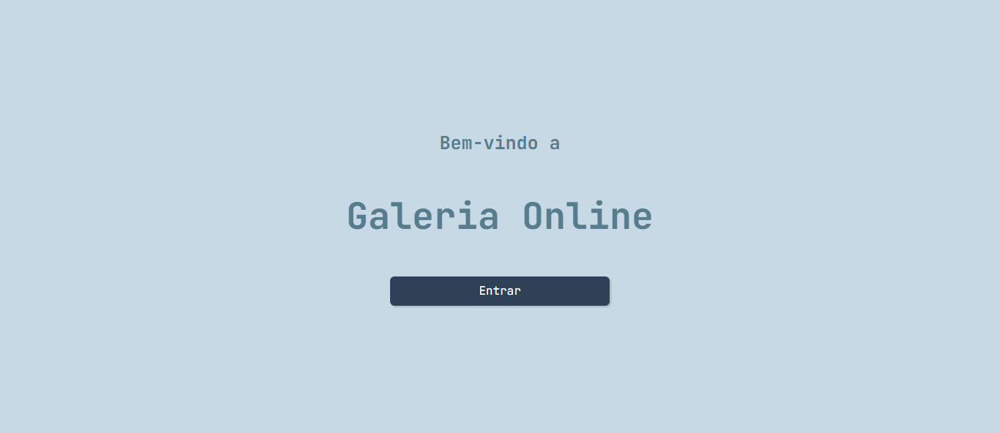
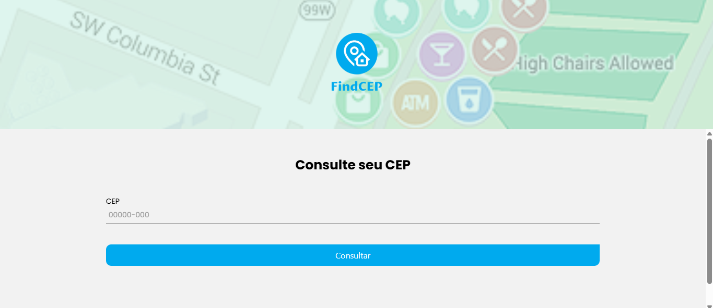
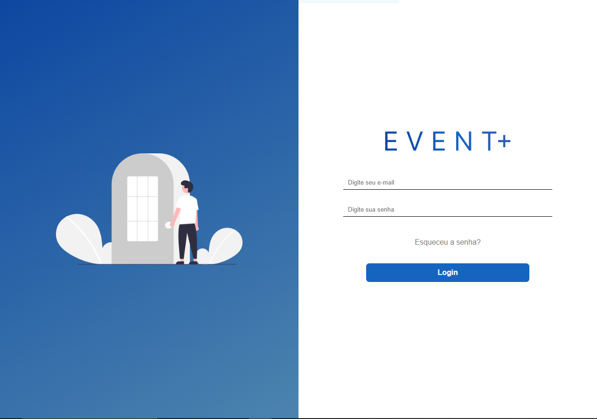

João Pedro
Desenvolvedor Full-stack
Desenvolvedor Full-stack
Estudante de Desenvolvimento de Sistemas do SENAI, tenho foco em criar soluções eficientes, escaláveis e seguras para diferentes necessidades de negócio. Tenho experiência em análise, desenvolvimento e manutenção de softwares, sempre buscando aplicar boas práticas de programação, padrões de arquitetura e metodologias ágeis. Durante minha trajetória, trabalhei com linguagens como JAVA, JAVASCRIPT, HTML, CSS, C#, C++, PHP,FLUTTER, DART, REACT.JS, REACT NATIVE, MySQL e SQL, além de frameworks modernos que potencializam a produtividade e qualidade das entregas. Também possuo conhecimento em bancos de dados relacionais e não relacionais, versionamento de código (Git) e integração de APIs. Sou movido por desafios e pelo aprendizado constante, acompanhando as tendências tecnológicas para entregar sistemas que realmente agreguem valor. Além das habilidades técnicas, prezo pela comunicação clara e pelo trabalho em equipe, entendendo que um bom software é resultado da colaboração entre profissionais e clientes. Estou em busca de oportunidades para aplicar minhas competências, crescer profissionalmente e contribuir para o desenvolvimento de soluções que façam a diferença no mercado.

Uma API RESTful para gerenciamento de imagens, construída com ASP.NET Core e Entity Framework. Ela permite o upload, listagem, atualização e exclusão de imagens, com todas as funcionalidades acessíveis via Swagger. Este projeto é a base para uma futura aplicação web completa com React.

Desenvolvi uma aplicação que utiliza uma API para buscar dados de endereços a partir de um CEP. É simples e prático: basta digitar o número e pronto, você tem acesso a informações como rua, bairro e cidade. Um jeito rápido de encontrar o que você precisa!

Desenvolvi um projeto em react.js, usando o router dom e npm, fiz o consumo de API para esse projeto que foi desenvolvida com c# ASP.NET feita do zero, usando também a famosa azure e criptografando a senha do usuario e do admin.